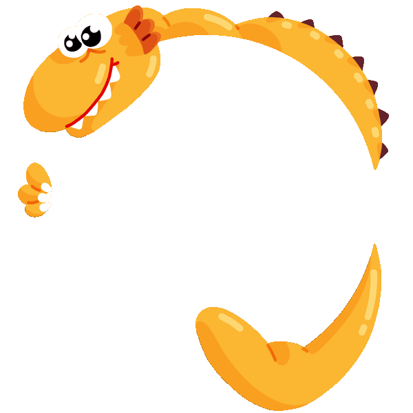

I’m a product designer living in the Sierra Nevada. Most recently I’ve been working at Netflix building the games social platform and previously was on the commerce team growing subscribers.
Before that I worked at Discord helping people express themselves and grow the Nitro subscription product. During my time at Meta I designed ad formats, creator products, and all types of video formats across Instagram and the Facebook App.
I get excited by prototyping, exploring artificial intelligence, and well crafted products. I’m always interested in pushing digital mediums to the next levels of immersion.
Full work case studies available on request.